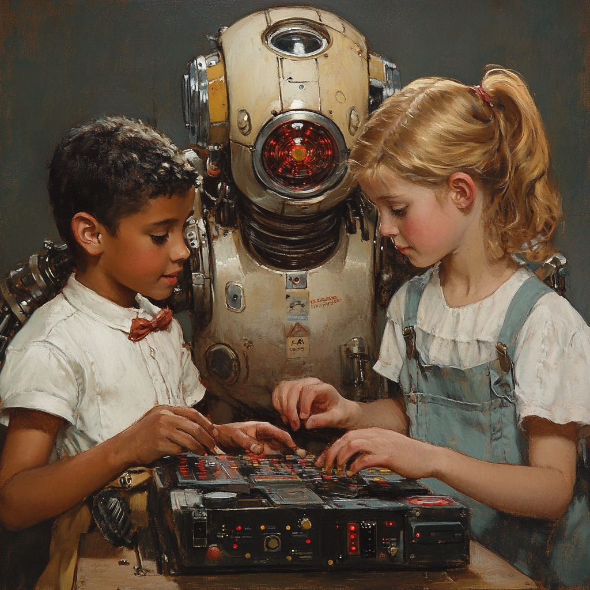
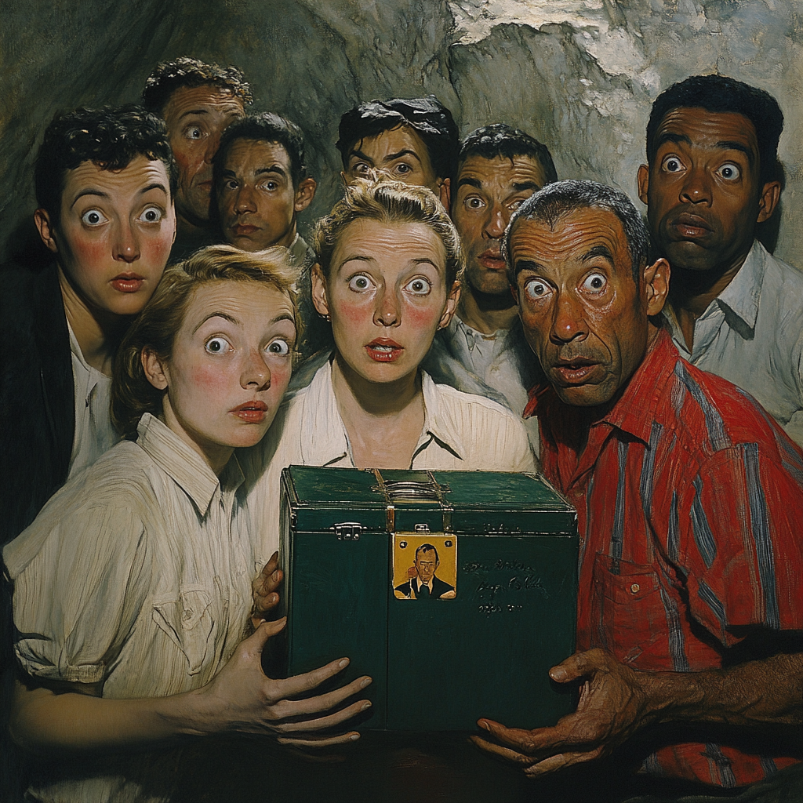

10 Things an AI Project Manager Needs To Know

A successful AI project manager needs to embrace uncertainties, balancing technical feasibility with business goals. It’s not just about building a model—it’s about understanding when machine learning is the right tool, defining success metrics early, and ensuring models remain useful long after deployment.
Perhaps most importantly, AI project managers act as the bridge between data scientists, engineers, and business stakeholders. Without strong communication, projects can devolve into a “black box” where decisions are made without clear explanations. To keep everyone aligned, PMs must translate technical complexities into practical insights, ensuring AI delivers real-world impact.
This guide covers ten crucial things every AI project manager needs to know, from managing messy data to avoiding costly mistakes.
1. Data is Everything (And It’s Often Messy)
 ML models live and die by the quality of data. Unlike traditional software, where development is more deterministic, ML projects require extensive data collection, cleaning, and preprocessing before even getting to model training. PMs should allocate time and resources for proper data preparation rather than assuming clean datasets exist.
ML models live and die by the quality of data. Unlike traditional software, where development is more deterministic, ML projects require extensive data collection, cleaning, and preprocessing before even getting to model training. PMs should allocate time and resources for proper data preparation rather than assuming clean datasets exist.
2. Models Are Not Magic – They Require Experimentation
ML isn’t just about feeding data into an algorithm and getting perfect results. It involves iterative experimentation, hyperparameter tuning, and evaluation to find the best-performing model. Rushing the process or setting unrealistic deadlines can lead to poor model performance and technical debt.
3. Define Success Metrics Early
Project Managers should work with ML teams to define clear, measurable success metrics upfront. Whether it’s accuracy, recall, precision, F1-score, or business KPIs, agreeing on success criteria helps avoid last-minute changes in expectations.
4. ML Models Need Maintenance and Monitoring
Unlike traditional software, ML models degrade over time due to data drift and changing user behavior. Deployment is just the beginning—models require ongoing monitoring, retraining, and evaluation. PMs should plan for post-deployment maintenance and allocate resources accordingly.
5. Computational Costs Can Be High
Training large ML models, especially deep learning models, requires significant computational resources. GPUs, TPUs, and cloud compute can be expensive. PMs should work with engineers to balance cost, performance, and feasibility when designing ML solutions.
6. Explainability Matters – But It’s Not Always Easy
Stakeholders often ask, “Why did the model make this decision?” While some models (like decision trees) are interpretable, deep learning models can be black boxes. Expecting full explainability from every ML model is unrealistic, but PMs should work with engineers to determine an appropriate level of transparency.
7. Not Every Problem Needs Machine Learning
Just because ML is trendy doesn’t mean it’s always the best solution. Many problems can be solved with simpler heuristics, rule-based systems, or traditional analytics. PMs should work with engineers to evaluate whether ML is the right tool for the job rather than assuming it’s always necessary.
8. Data Privacy and Compliance Are Critical
ML engineers need to follow strict data privacy laws like GDPR and CCPA. PMs should be aware of these regulations and plan projects with compliance in mind, ensuring legal and ethical handling of user data.
9. Data Scientists and ML Engineers Are Not the Same
 While both roles work with data, data scientists focus on analytics, insights, and modeling, while ML engineers focus on productionizing and scaling models. Understanding this distinction helps PMs allocate tasks more effectively and set realistic expectations.
While both roles work with data, data scientists focus on analytics, insights, and modeling, while ML engineers focus on productionizing and scaling models. Understanding this distinction helps PMs allocate tasks more effectively and set realistic expectations.
10. Communication Is Key – Avoid the “Black Box” Syndrome
 ML engineers and data scientists sometimes get deep into technical work, making it hard for PMs and stakeholders to follow. At the same time, vague project requirements can lead to misalignment. Regular check-ins, clear documentation, and collaborative discussions ensure everyone stays on the same page.
© Copyright 2024 Justin Donaldson. Except where otherwise noted, all rights reserved. The views and opinions on this website are my own and do not represent my current or former employers.